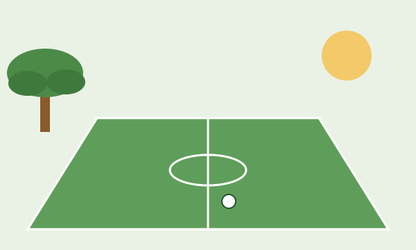

Club de barrio · Córdoba
Club Social y Deportivo Los Algarrobos
Deporte, encuentro y comunidad en la zona norte de la ciudad. Más de 650 socios y 8 actividades para chicos y grandes.
Ver actividades Preinscribirme

Nuestra historia
El club nació en 1958, cuando un grupo de vecinos se juntaba a jugar al fútbol a la sombra de un viejo algarrobo que todavía sigue en pie al costado de la cancha. Con los años se sumaron el salón, el natatorio y el playón polideportivo, siempre construidos con el esfuerzo de las familias del barrio.
Hoy seguimos siendo un club de puertas abiertas: un lugar donde los chicos aprenden un deporte, los adultos se mantienen activos y el barrio se encuentra.
Qué ofrecemos
- Fútbol infantil
- Vóley mixto
- Básquet juvenil
- Natación
- Patín artístico
- Ajedrez
- Funcional adultos
- Yoga
Dónde estamos
Av. Juan B. Justo 5200, Barrio Los AlgarrobosZona norte, Córdoba Capital